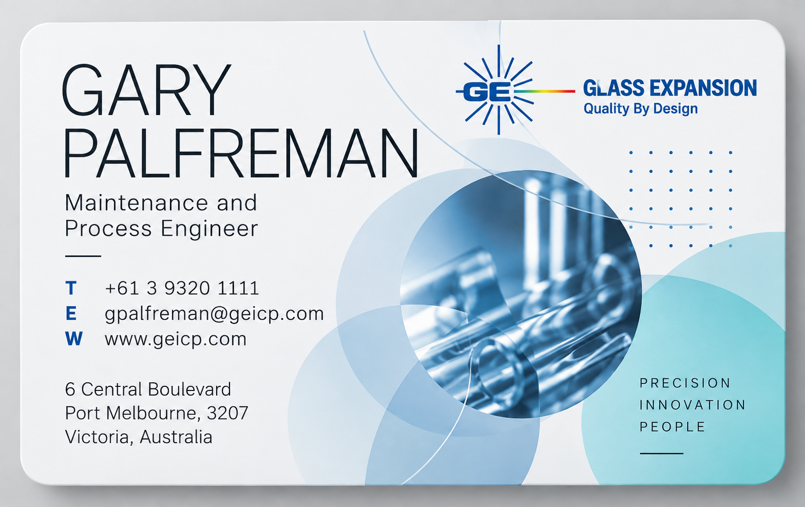
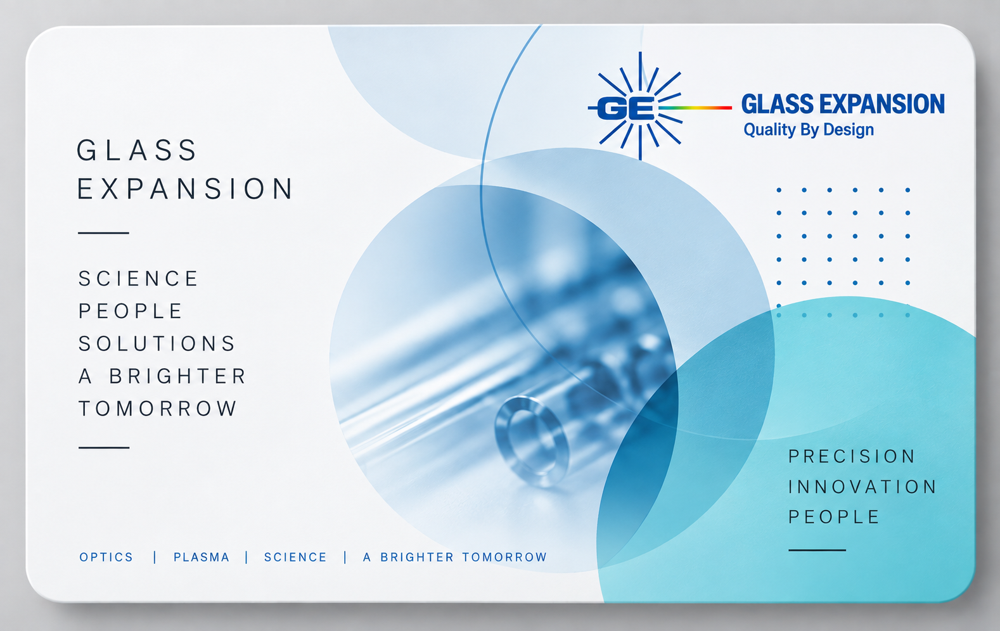

Digital Business Card


Tap the card to flip it. On first load it performs one automatic 3D turn, then stays under your control.


Tap the card to flip it. On first load it performs one automatic 3D turn, then stays under your control.